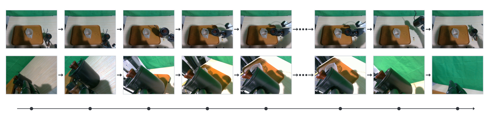
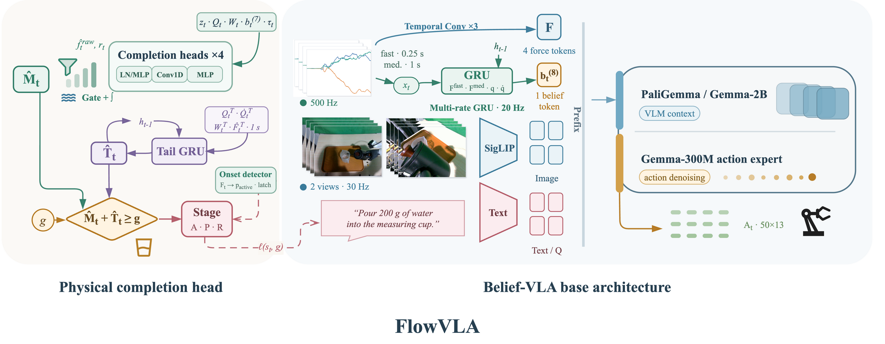
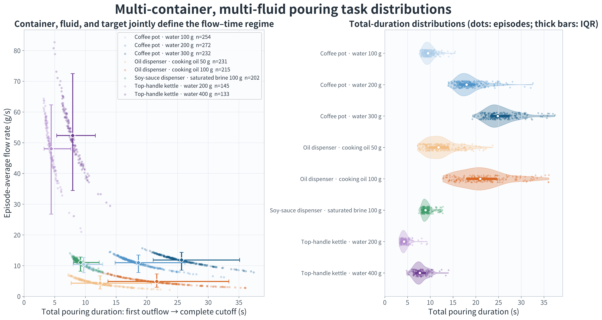
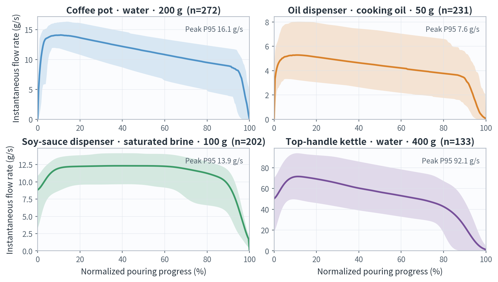
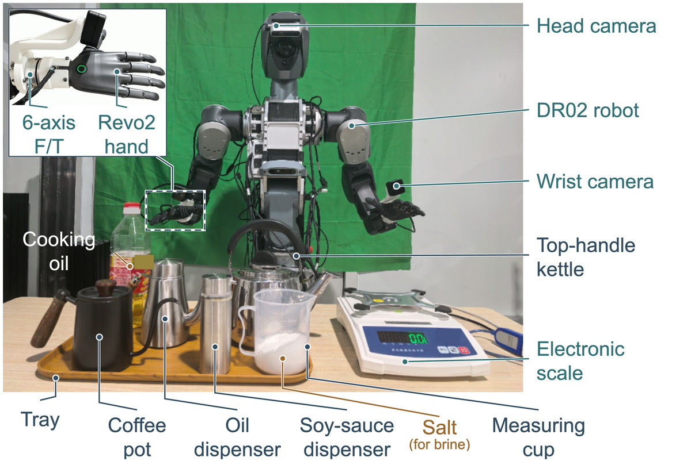

Remember physical progress
A recurrent force observer maintains flow, accumulated mass, uncertainty, reliability, and an onset latch across perceptually similar states.
Learning Flow-Aware Physical Completion
for Quantitative Robotic Pouring
A robot can look almost unchanged while poured mass keeps accumulating. FlowVLA makes that hidden physical progress explicit—then returns at the right moment.
During steady pouring, images and robot pose may barely change while transferred mass continues to accumulate. Visually similar states can require opposite actions.

(It₁, qt₁) ≈ (It₂, qt₂)
Mt₁ ≠ Mt₂ → a*t₁ ≠ a*t₂
Seeing the target “pour 200 g” does not reveal how many grams have already moved—or how much will still leave the source during return.
A recurrent force observer maintains flow, accumulated mass, uncertainty, reliability, and an onset latch across perceptually similar states.
Boundary-aware supervision prevents action chunks from blending continued pouring with the return maneuver.
A learned tail model anticipates residual outflow, so the controller returns before current mass alone reaches the target.
FlowVLA couples a shared π0.5 action expert with an explicit, target-independent completion module.

Open full-resolution figure ↗On the primary coffee-pot / water task, FlowVLA improves both quantitative accuracy and end-to-end completion.
Goal-balanced error at 100 / 200 / 300 g.
Among completed trials with final mass.
Manipulation and quantity success over all attempts.
Across four container–fluid domains.
| Method | Post-grasp | E2E | MacroMAE | Within ±10% | E2E + ±10% |
|---|---|---|---|---|---|
| π0.5 | 33.3% | 21.7% | 66.6 g | 13.3% | 2.9% |
| ForceVLA | 70.4% | 45.2% | 50.3 g | 23.7% | 10.7% |
| TA-VLA-Wrench | 73.8% | 47.0% | 101.6 g | 12.9% | 6.1% |
| BELIEF-VLA | 88.1% | 59.0% | 26.5 g | 52.5% | 31.0% |
| FlowVLA Ours | 94.0% | 64.2% | 13.1 g | 83.5% | 53.7% |
Mass accuracy is measured on completed trials; E2E + ±10% counts quantitatively accurate completed trials over all attempts. See the paper for full protocol and sample counts.
Nine successful robot trials, evenly sampled across 100 g, 200 g, and 300 g targets. Each run completes the full pour–return–place sequence without access to the scale at deployment.
3 representative successful trials
3 representative successful trials
3 representative successful trials
The primary model interpolates to held-out 150 / 250 g targets without retraining. Independently trained models further test the formulation on three additional container–fluid settings.
Water · 100–300 g
13.1 g MacroMAEWater · 200 / 400 g
15.0% relative MAESaturated brine · 100 g
9.05 g MAECooking oil · 50 / 100 g
10.2% relative MAE
1,684 flow-labeled demonstrations across four domains
Different flow rates and residual-outflow tails
The DR02 upper-body robot uses head and wrist RGB, joint state, and a six-axis wrist force/torque sensor. The electronic scale supplies offline supervision and final evaluation only—it is unavailable to the deployed policy.
Precise pouring is not only an action-generation problem. It is a physical-completion problem.
More demonstrations and force feedback improve manipulation, but do not by themselves resolve when a requested physical quantity has been reached.
If you find FlowVLA useful in your research, please cite it as follows.
@article{yang2026flowvla,
title = {FlowVLA: Learning Flow-Aware Physical Completion
for Quantitative Robotic Pouring},
author = {Yang, Liwen and Zhang, Yutian and Zhai, Jiaqi and
Yang, Li and Tang, Tutian and Shan, Qiwei and
Bi, Yancheng and Shangguan, Qiankuan and Zhu, Yangkun and
Hao, Ce and Wei, Dong and Yu, Qiaojun and Hou, Dibo},
year = {2026}
}